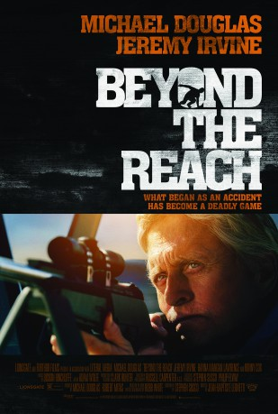

gesehen am 29.10.2015
gesehen am 29.10.2015Alternativ: Beyond the Reach gesehen am 29.10.2015
 
 IMDB-Wertung: 5.6 / 10
IMDB-Wertung: 5.6 / 10  Metascore:
Metascore: 
A high-rolling corporate shark and his impoverished young guide play the most dangerous game during a hunting trip in the Mojave Desert.
Jahr: 2014
Dauer: 91 Minuten
FSK: 16
Land: USA Studio: Roadside AttractionsTonspuren: DTS - ,
Untertitel:
Auflösung: 1080p (1920x800) Größe: 5969 MB
Genre: Thriller
Regisseur: Jean-Baptiste Léonetti
Drehbuch: Stephen Susco, Robb White
Soundtrack: Dickon Hinchliffe
Darsteller:
 Michael Douglas als Madec
Michael Douglas als Madec Jeremy Irvine als Ben
Jeremy Irvine als Ben Ronny Cox als Sheriff Robb
Ronny Cox als Sheriff Robb Martin Palmer als Charlie , uncredited
Martin Palmer als Charlie , uncreditedDatei: X:\2014(N-Z)\Reach In der Schusslinie, The (2014, FSK16, 1920x800).mkv seit 16.09.2015
Festplatte: HD 2013(I-Z)-2014(A-Z)
 Es gibt insgesamt 163 Filme in der Gruppe '2014(N-Z)'
Es gibt insgesamt 163 Filme in der Gruppe '2014(N-Z)'